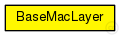
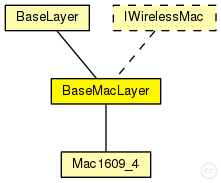

This documentation is released under the Creative Commons license
This documentation is released under the Creative Commons licenseBase module for every mac layer module
The following diagram shows usage relationships between types. Unresolved types are missing from the diagram. Click here to see the full picture.
The following diagram shows inheritance relationships for this type. Unresolved types are missing from the diagram. Click here to see the full picture.
| Name | Type | Description |
|---|---|---|
| BaseLayer | simple module |
Base module for all layer modules. Defines the in and out gates |
| Name | Type | Description |
|---|---|---|
| Mac1609_4 | simple module |
Manages timeslots for CCH and SCH listening and sending. |
| Name | Type | Default value | Description |
|---|---|---|---|
| notAffectedByHostState | bool | false | |
| coreDebug | bool | false |
debug switch |
| headerLength | double |
length of the MAC packet header (in bits) |
|
| address | string | "auto" |
MAC address as hex string (12 hex digits), or "auto". "auto" values will be replaced by a generated MAC address in init stage 1. |
| Name | Value | Description |
|---|---|---|
| class | BaseMacLayer |
| Name | Direction | Size | Description |
|---|---|---|---|
| upperLayerIn | input |
from upper layer |
|
| upperLayerOut | output |
to uppe layer |
|
| upperControlIn | input |
control from upper layer |
|
| upperControlOut | output |
control to upper layer |
|
| lowerLayerIn | input |
from lower layer |
|
| lowerLayerOut | output |
to lower layer |
|
| lowerControlIn | input |
control from lower layer |
|
| lowerControlOut | output |
control to lower layer |
// Base module for every mac layer module simple BaseMacLayer extends BaseLayer like IWirelessMac { parameters: @class(BaseMacLayer); bool coreDebug = default(false); // debug switch double headerLength @unit(bit); // length of the MAC packet header (in bits) string address = default("auto"); // MAC address as hex string (12 hex digits), or // "auto". "auto" values will be replaced by // a generated MAC address in init stage 1. }
This documentation is released under the Creative Commons license